EVP: Enhanced Visual Perception using Inverse Multi-Attentive Feature Refinement and Regularized Image-Text Alignment
Mykola Lavreniuk1,
Shariq Farooq Bhat2,
Matthias Müller3,
Peter Wonka2
1SRI NASU-SSAU,
2KAUST,
3Intel Labs
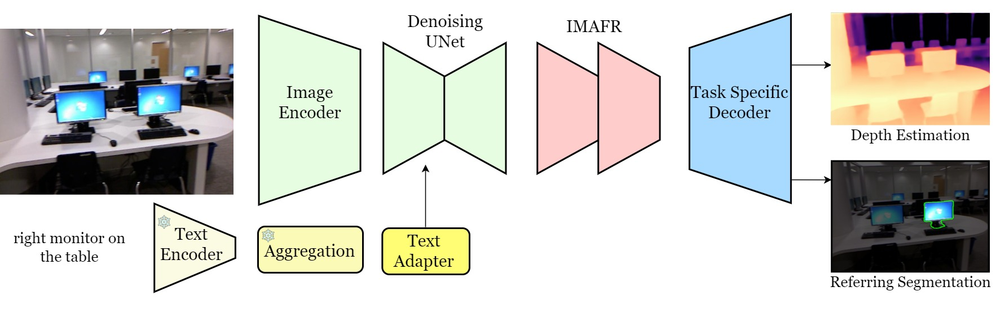
Figure 1. Overview of the EVP model architecture. An input image is first encoded by an auto-encoder and a denoising U-Net (light green) taken from a pre-trained Stable Diffusion model. Our proposed Inverse Multi-Attentive Feature Refinement (IMAFR) module (light red) refines features from the denoising U-Net at different scales. Our novel text aggregation strategy (yellow), combines information from class names or BLIP-2-generated captions to create a unified, enriched description for improved model performance.
Abstract
This work presents the network architecture EVP (Enhanced Visual Perception). EVP builds on the previous work VPD which paved the way to use the Stable Diffusion network for computer vision tasks. We propose two major enhancements. First, we develop the Inverse Multi-Attentive Feature Refinement (IMAFR) module which enhances feature learning capabilities by aggregating spatial information from higher pyramid levels. Second, we propose a novel image-text alignment module for improved feature extraction of the Stable Diffusion backbone. The resulting architecture is suitable for a wide variety of tasks and we demonstrate its performance in the context of single-image depth estimation with a specialized decoder using classification-based bins and referring segmentation with an off-the-shelf decoder. Comprehensive experiments conducted on established datasets show that EVP achieves state-of-the-art results in single-image depth estimation for indoor (NYU Depth v2, 11.8% RMSE improvement over VPD) and outdoor (KITTI) environments, as well as referring segmentation (RefCOCO, 2.53 IoU improvement over ReLA).
Model
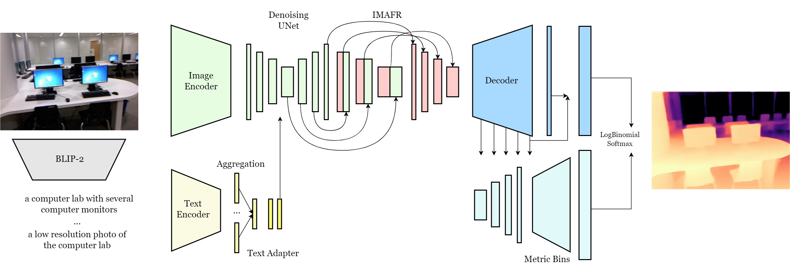
Figure 2. Detailed illustration of the EVP model architecture. Each component, including the Inverse Multi-Attentive Feature Refinement (IMAFR) module (light pink) and the novel text aggregation strategy (warm yellow), provides a comprehensive view of the model's internal structure and information flow. The IMAFR module adeptly refines features at various scales, leveraging critical spatial information from higher pyramid levels. The novel text aggregation strategy combines information from class names or BLIP-2-generated captions (light gray), creating a unified, enriched description to enhance overall model performance.
Our contributions are threefold:
- We propose the novel Inverse Multi-Attentive Feature Refinement module for effective feature aggregation across layers, a regularized free-form image-text alignment module, and a classification-based decoder for depth estimation.
- We integrate these modules with a Stable Diffusion backbone to form the novel network architecture EVP.
- We conduct extensive experiments on depth estimation and referring segmentation outperforming current state-of-the-art methods.
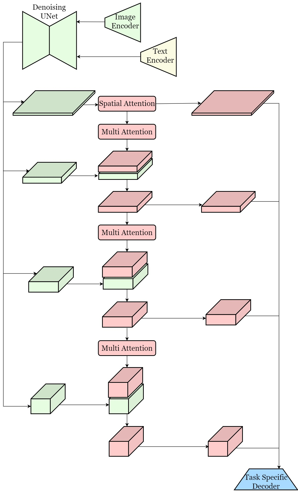
Figure 3. Inverse Multi-Attentive Feature Refinement (IMAFR) (light pink) adeptly refines features at different scales received from the denoising U-Net (light green) using multi-attention.
Results
Depth Estimation
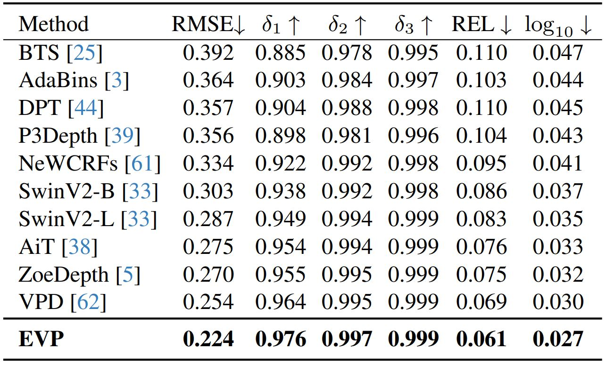
Table 1. Performance comparison on the NYU Depth v2 dataset. The provided values are sourced from the respective original papers. The best results are highlighted in bold.
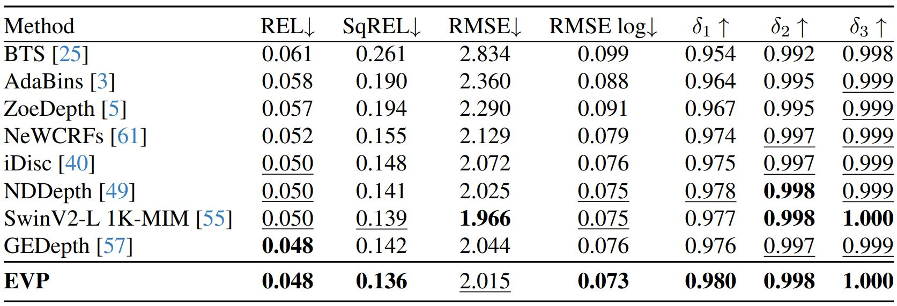
Table 2. Performance comparison on the KITTI dataset for single frame methods. The provided values are sourced from the respective original papers. The best results are highlighted in bold, second best are underlined.
Referring Image Segmentation
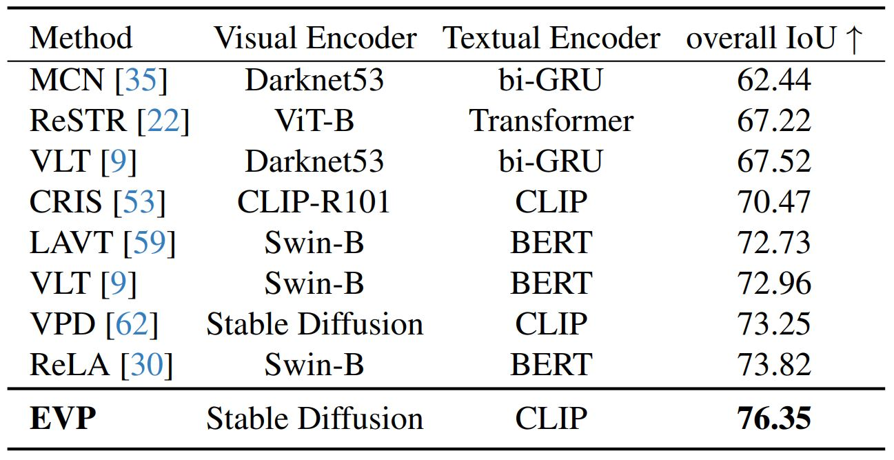
Table 3. Performance comparison on the RefCOCO dataset. The provided values are sourced from the respective original papers. The best results are highlighted in bold.
Visualizations
Depth Estimation
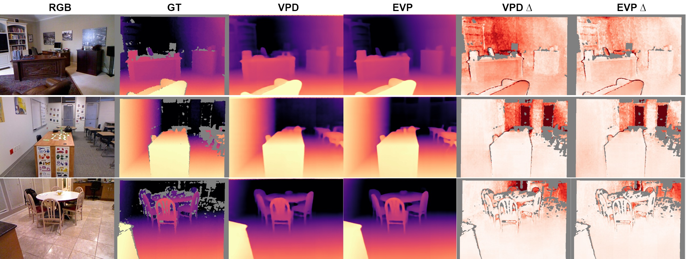
Figure 4. Visualization of EVP on images from the NYU Depth v2 dataset.

Figure 5. Visualization of EVP on images from the KITTI dataset.
Referring Image Segmentation
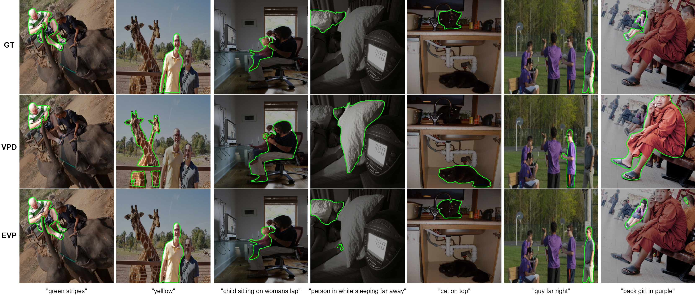
Figure 6. Visualization of EVP on images from the RefCOCO dataset.
More Results
Depth Estimation
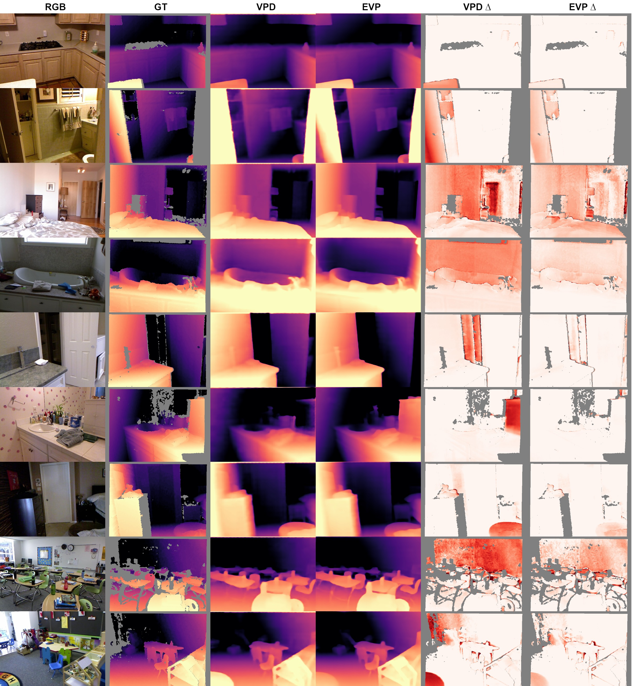
Figure 7. Visualization of EVP on images from the NYU Depth v2 dataset.
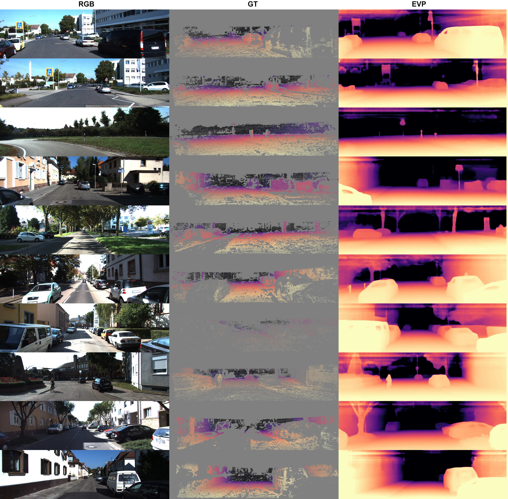
Figure 8. Visualization of EVP on images from the KITTI dataset.
Referring Image Segmentation
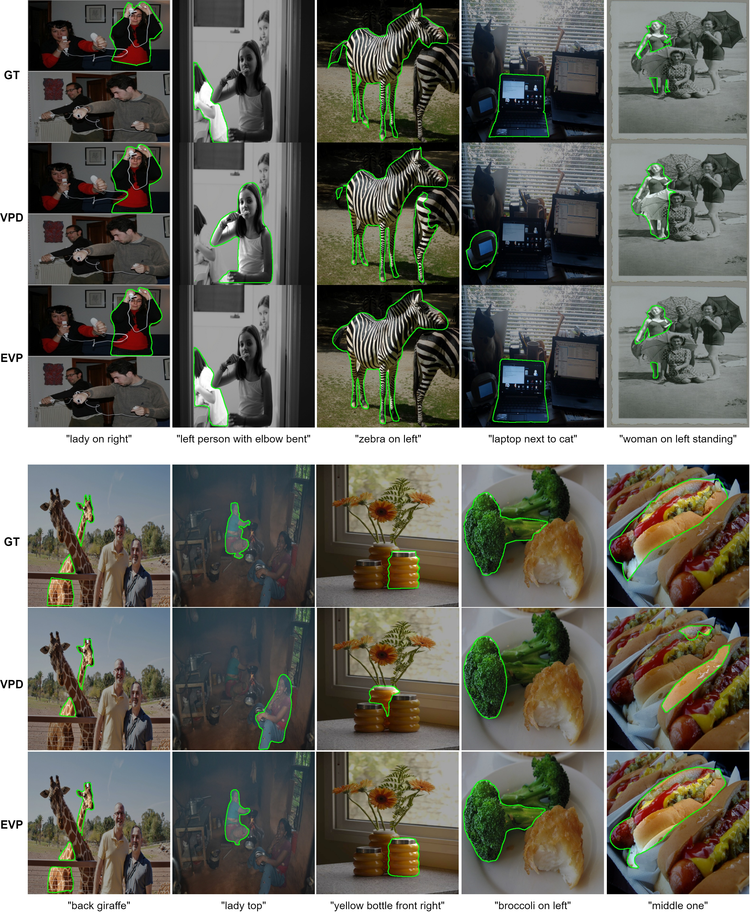
Figure 9. Visualization of EVP on images from the RefCOCO dataset.